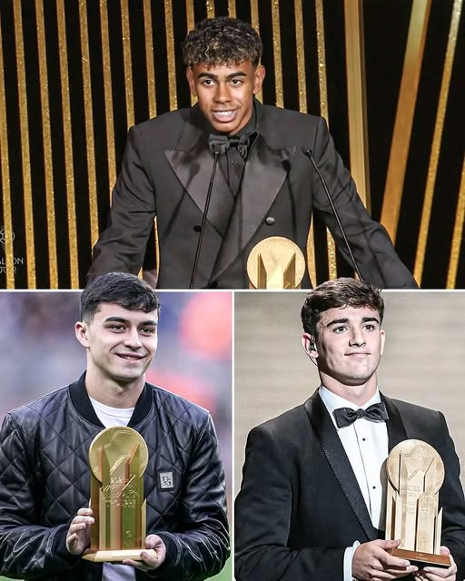
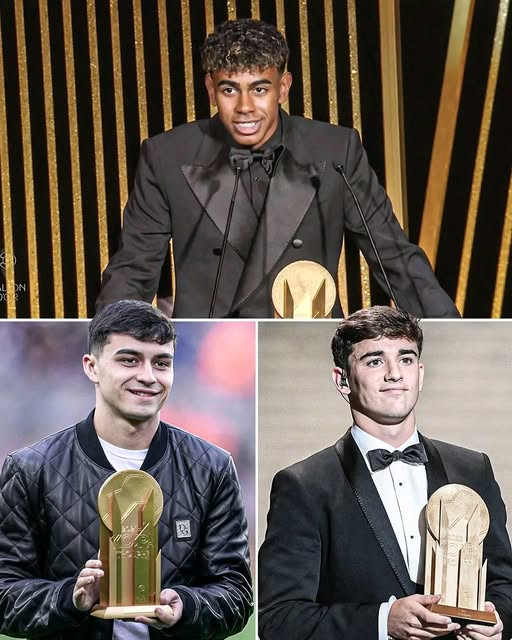
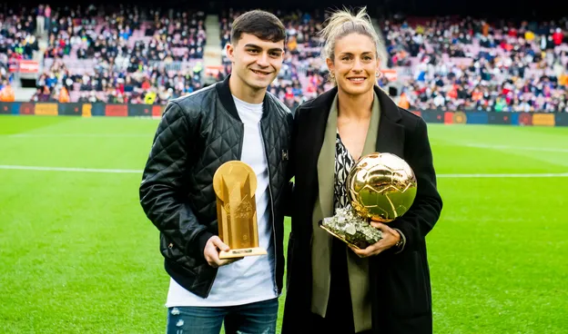
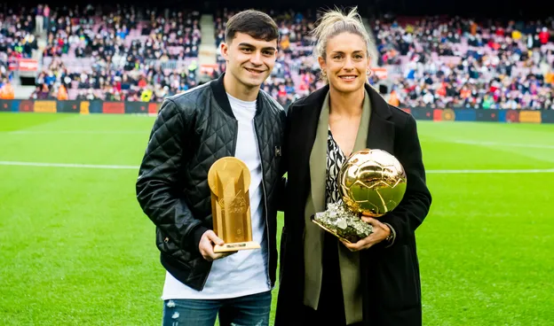

Qui est Pedri ?

De son vrai nom Pedro González López, surnommé Pedri, est un footballeur espagnol évoluant au FC Barcelone. Né à Tegueste (îles Canaries), il s’est rapidement imposé comme l’un des plus grands talents du football espagnol, grâce à sa vision de jeu et sa technique exceptionnelle.Plus de détailssur sa vie et son histoire.
Carrière
Pedri débute sa carrière professionnelle à Las Palmas en 2019, déjà il impressionne par sa maturité et son intelligence de jeu. Rapidement recruté par le FC Barcelone, il s’impose dès sa première saison (2020-2021) comme titulaire, enchaînant les matchs avec un calme remarquable pour son jeune âge.
La même année, il participe à l’Euro 2020 avec l’Espagne et aux Jeux Olympiques de Tokyo, devenant par la même occasion une pièce maîtresse de la sélection espagnole. Il remporte ainsi le Trophée Kopa du meilleur jeune joueur du monde en 2021. plus de detail sur la carriere de Pedri


Palmares
 

Malgré son jeune âge Pedri a déjà une carrière très complète et un grand nombre de trophées.Liste et photo du palmarèsde Pedri.
Les 3 joueurs fugurant sur la troisième photo sont Lamine Yamal, Pablo Gavi et Pedri. Pablo Gavi et Lamine Yamal sont tous les deux issues du centre de formation du FC Barcelone (La Masia). Bien que non originanire de Barcelone, Pedri est souvent considéré à tort par les fans et les supporters comme issue de la Masia. En effet son style de jeux en est la parfaite illustration. La Masia est une partie de l'identité du Barca, une majorité des plus grandes légendes du club en sont issues (Messi, Iniesta, Xavi ...). Pour le Barca, représenter la Masia est donc très important. Les trois joueurs que sont Pedri, Gavi et Yamal, l'ont fait de la plus belle des manières en gagnant le trophée KOPA du meilleur jeune, 4 fois en 5 ans (Yamal x2 , Gavi x1 , Pedri x1).
Actualité
Après avoir été récemment blessé, Pedri revient progressivement à son meilleur niveau au FC Barcelone. Sous la direction de son entraineur Hansi Flick, il affiche actuellement son meilleur niveau et continue d’être un joueur clé et cela peu importe le maillot qu'il porte, celui de son club comme celui de la sélection espagnole.
En dehors du terrain, Pedri est d'un tempérament très discret et reservé. Il représente une personnalité humble et humaine, si rare dans le football actuel. C'est aussi une des raisons pour laquelle, il est autant apprécié par les amateurs de football.

 
